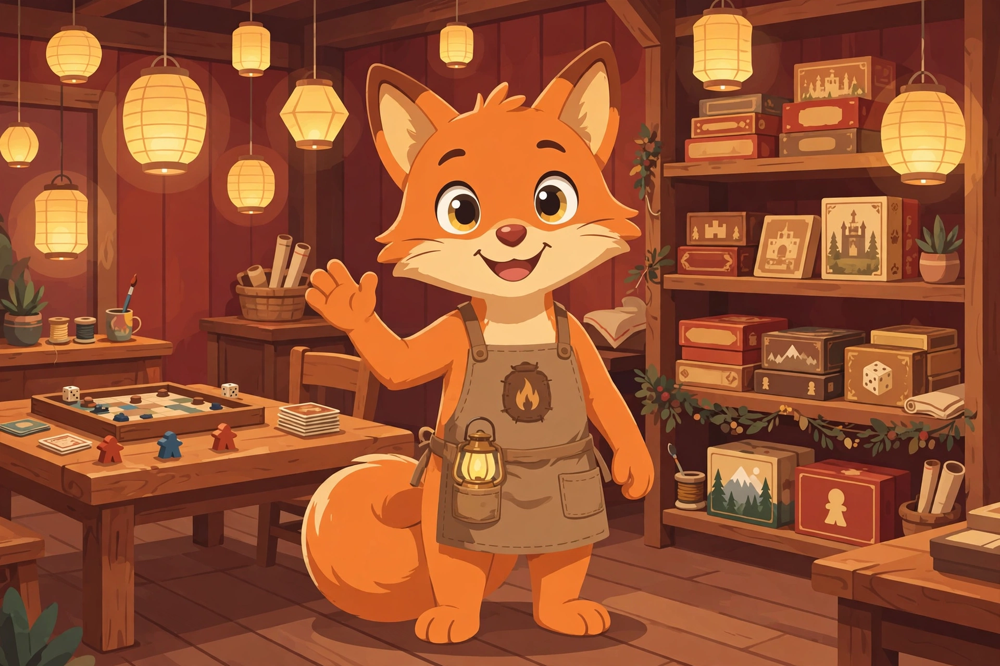

A lantern-lit game hall where every game is one of the mirror's own.
A mirror of the browser games kind of website: a catalog of Signature-made games that play in the browser.
Signature Arcade is a mirror of the games kind of website: a website that lets visitors play games in the browser, with nothing to download and nothing to install. The kind grew out of single games played on one machine, then games shared over the network, then whole catalogs of small games that load in the browser and start at once. This mirror follows that same shape — a catalog of games, a game that starts on the page, and a score — rebuilt with Signature branding and the network's own data.
Works out the score by the mirror's own rule: 100 minus 10 for each try after the first, down to 0. It cannot play the game for you — it only works out the score.
Finds the secret number for any seed by the mirror's own rule: secret = (seed x 6) mod 100. It cannot guess for you — it only shows the secret for the seed you type.
Designs, printables, and demos only — free to download and make. Nothing here is for sale.
A printed board for the Lantern Maze game: 12 rooms, a far gate, and a lantern token to move through them.
Signature design A design, not a good for sale. Free to download and make.
A set of 20 star cards and 5 slip cards for playing Starfall Catch away from the screen.
Signature design A design, not a good for sale. Free to download and make.
A score pad for the secret-number game, with the score rule printed on every sheet.
Signature design A design, not a good for sale. Free to download and make.
Fun, labeled fun — not a fact. The Lantern League is a made-up league for the mirror's own games: Arlo the fox holds the Lantern Maze record at 12 rooms in 9 moves, Pip the pigeon once caught 20 stars in a row, and the Harbor Checkers cup is still waiting for its first champion. None of this happened; it is a story for game night.
Tools (JavaScript)Design sheet 1Design sheet 2Design sheet 3
Arlo the fox is the mascot of this themed version. Questions about the subject go to Group 3.